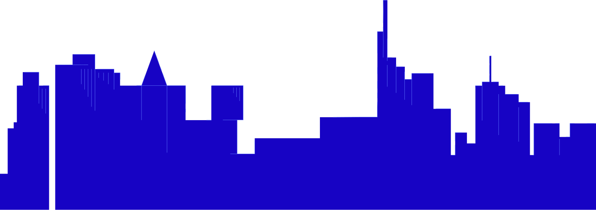
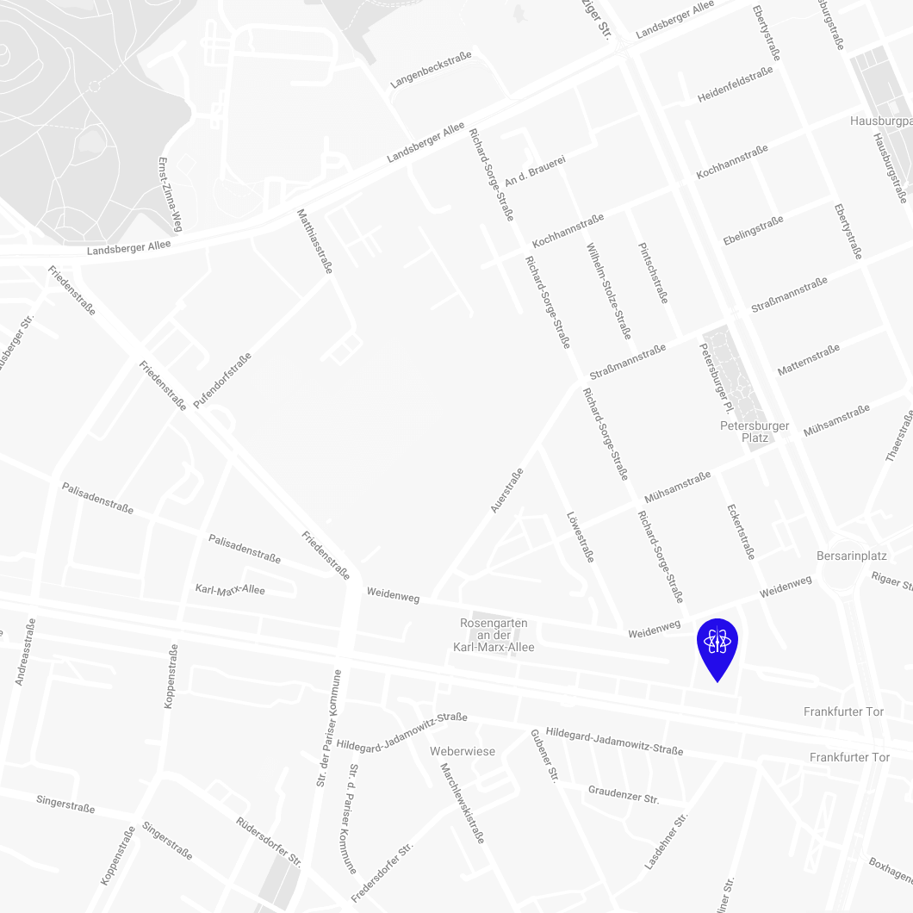

Jack into the 6th edition of React Day Berlin in 2024. This year we will cover a wide range of topics with significant focus on AI integrations and framework updates as React 19 and React compiler. It's time to hack the future.
Build apps, not walls
React Day Berlin returns in 2026!
-
800Devs
attending in-person -
5Kjoining
in remotely -
45+speakers & trainers
sharing insights
Coming in 2026
Berlin and online

Meet React heroes
Ready to level up your React skills with libraries authors, core teams and top engineers?
Dive into cutting-edge talks, level up your tech stack with hands-on workshops, and forge connections in a network of React enthusiasts.
This year, you can expect the authors and core teams of the following libraries / projects:
-
Astro
-
React 19
-
React Compiler
-
Next.js
-
Cursor
-
StyleX
-
Zustand
-
Jotai
-
React Query
-
TypeScript
-
React Testing Library
-
Remix
-
Vite
-
Redux
-
Million
-
React Native
13.12
Remote +
In-person day
Welcoming guests in Berlin and streaming online:
In-Person - 9am CET
Remote - 4:20am PST / 7:20am EST / 12:20pm BST / 1:20pm CET;
16.12
Remote Day
Streaming both tracks with speaker QnA's online across time zones - 7am PST/ 10am EST/ 3pm BST/ 4pm CET
10+
Free Remote + Pro workshops
Learn new tech and figure out the best practices with our expert trainers during 10+ Free & Pro workshops organized before and after the main conf day.
Program
React.js latest updates
AI & The Framework
Case Studies and Best Practices
Growing to senior, architecture
Performance Optimisation, SSR & SSG
Testing in React
Speakers
At React Day Berlin, we gather top experts and rising stars to explore cutting-edge topics in AI, React 19, and more. Join us as they uncover the latest in Architecture, Design Systems, and Performance on two dynamic stages.


react query
Dominik Dorfmeister
Sentry, Austria
Dominik is a Frontend Engineer, React-Query maintainer working at Sentry, who blogs about all things React and TypeScript (https://tkdodo.eu/blog/).

react 19
Tapas Adhikary
CreoWis Technologies, India
Tapas Adhikary is a Tech Educator at tapaScript, and the Co-Founder of CreoWis Technologies, a cutting-edge tech firm. He is also the founder of the ReactPlay Open Source community. Besides, he is a public speaker, a YouTuber, and a Tech Blogger on freeCodeCamp. He has vast experience in full-stack engineering and building SaaS solutions.

react 19
Johannes Goslar
Synthesia, Germany
Johnny loves (board|electronic) games, programming with a lot of parentheses and cycling. After receiving his MSc from Oxford, a short stint in San Francisco, an even shorter in London, he ended up home near Frankfurt. He famously got fired from Twitter in 2022, worked as Staff Engineer for Sizzle.gg afterwards and is now building the editor at Synthesia.

react server components
Aurora Scharff
Crayon Consulting, Norway
Aurora Scharff is a software developer and Microsoft MVP from Norway. She serves as a consultant at Crayon Consulting, while also contributing as React Certification Content Owner at certificates.dev. She focuses on web development with extensive experience in React and Next.js, including active use of React Server Components.
Aurora shares her knowledge through workshops, technical blog posts, social media, demo applications, and supporting fellow developers. She regularly presents internationally at recognized conferences, contributing to the global developer community through both her speaking engagements and educational content creation.


artificial intelligence
Shivay Lamba
TensorFlowJS Working Group Lead
Shivay Lamba is a software developer specializing in DevOps, Machine Learning and Full Stack Development.
He is an Open Source Enthusiast and has been part of various programs like Google Code In and Google Summer of Code as a Mentor and has also been a MLH Fellow. He is actively involved in community work as well. He is a TensorflowJS SIG member, Mentor in OpenMined and CNCF Service Mesh Community, SODA Foundation and has given talks at various conferences like Github Satellite, Voice Global, Fossasia Tech Summit, TensorflowJS Show & Tell.

artificial intelligence
Carly Richmond
Elastic, UK
Carly is Developer Advocate Lead at Elastic, based in London, UK. Before joining Elastic in 2022, she spent over 10 years working as a technologist at a large investment bank, specialising in front-end web development and agility. She is a UI developer, who occasionally dabbles in writing backend services, a speaker and a regular blogger. She enjoys cooking, photography, drinking tea, and chasing after her young son in her spare time.


inspiration
Elizabet Oliveira
Xata, Portugal
Talk: From Hip-Hop to Code
Elizabet Oliveira, a former hip-hop artist and now a design engineer at Xata, is known for combining creativity and design in open-source projects. She created the award-winning React-Kawaii library and was the lead designer for "Elastic UI," a popular design system at Elastic. Famous for her unique presentations, including her "Fork this" rap song, Elizabet aims to bridge the gap between front-end development and design.

artificial intelligence
Maurice de Beijer
Independent Software Consultant and Trainer, Netherlands
Maurice de Beijer is an independent software consultant and trainer. He specializes in TypeScript, ECMAScript, React and Svelte. His work includes popular collaboration software as well as a large, global, safety application for the oil and gas industry. He has a preference for working with startups and smaller, more dynamic companies. Maurice is also active in the open source community. He teaches ECMAScript, TypeScript, React, Cypress, Playwright and RxJS courses. Since 2005, he has received Microsoft’s Yearly Most Valuable Professional Award. Further, Maurice is active in the Dutch dotNed user group and helps organize its meetings.

astro
Elian Van Cutsem
React Bricks, Belgium
Talk: Make the Web Weird Again
Workshop: Astro: All Hands On
Elian Van Cutsem or "ElianCodes" is a full-stack developer, creative technologist, and all-around internet troublemaker based in Belgium. He’s the CTO at Vulpo and works in Developer Relations at React Bricks, focusing on developer experience, documentation, and education. Previously, he was a Software Engineer and core maintainer at Astro.
Elian is also a co-organizer of several major JavaScript communities and events, including BeJS, React Paris, React Brussels, and React Africa.
Alongside his professional work, he creates provocative and experimental AI projects, designed to challenge our assumptions about ethics, automation, and human behavior. His work blends code and commentary, often in ways that are both hilarious and uncomfortably real.
Elian is known for his passion, puns, and offbeat sense of humor. His talks combine technical insight with a strong dose of creative chaos—guaranteed fun on stage.


artificial intelligence
Steve Ruiz
tldraw, UK
Steve Ruiz is founder and CEO of tldraw, a London-based startup building an infinite canvas component for the web. The company is known for its tldraw SDK as well as for many viral AI demos including Make Real and tldraw computer. Prior to tldraw, Steve worked on several open source tools for creative products, including perfect-freehand and perfect-arrows.

testing
Lenz Weber-Tronic
Apollo GraphQL, Germany
Lenz Weber-Tronic works as a Senior Staff Software Engineer at Apollo GraphQL, where he is part of the team maintaining the Apollo TypeScript Client.
He is a maintainer of Redux Toolkit and if he’s not currently trying to summon elder gods with weird TypeScript incantations he can usually be found on StackOverflow answering questions on Apollo and Redux usage or opening random PRs on GitHub.

best practices
Brad Westfall
ReactTraining, USA
Brad Westfall has been teaching Web Development since 2010 including bootcamp instruction, online videos, conference speaking, writing at CSS-Tricks.com, and corporate training for ReactTraining.com. He loves to connect with students by helping them achieve their technical goals and by distilling complex concepts into simple instruction.

javascript
Artem Zakharchenko
Freelancer, Czechia
Hi! My name is Artem. I'm a self-taught software engineer. I've built this thing called Mock Service Worker, which has changed the lives of developers all around the world. I'm extremely thankful for that. I love testing, and I love writing and teaching about it even more. And coffee, yes, I like that one as well.


performance
Dmitry Kovalenko
LightSource.ai, your node_modules
Software engineer that have been doing react for years (I was material ui contribute for a while) and now passionate about Rust, OCaml and pure C. Love performant, robust and pretty applications and trying do deliver them on a regular basis :)

state management
Giulio Zausa
Flux.ai, Austria
Giulio is an Italian software engineer working at Flux and contributing to open source with Poimandres. He's deeply passionate about pushing the web platform to its limits, building things like custom React reconcilers, real-time computer vision on Web Workers and flex layout engines for THREE.js.


design
Dora Makszy
Norway
Dora Makszy, an experienced product design lead, focuses on seamless product delivery through efficient collaboration with cross-functional teams, especially developers. With over 17 years of international experience in various roles (developer, business analyst, manager and mainly a designer), she has a comprehensive understanding of the entire process.

developer experience
Will Klein
North, USA
Will is dedicated to crafting exceptional developer experiences, that help us increase our understanding, creativity, and flow. Throughout his career, he's shared expertise building developer tools, organized meetups, and helped cultivate thriving technical communities. Now at North Developer, he leads the effort to elevate the developer experience of their APIs and payments platform, through clear documentation, practical examples, and by working with the developer community to solve their challenges.


architecture
Mo Khazali
Theodo UK, UK
Mo is the Head of Mobile and a Tech Lead at Theodo UK, having worked on several projects with startups and established enterprises to create cross-platform mobile application in React Native. He's passionate about React Native, MobileDevOps, and pushing the boundaries of combining code across web and mobile.
Before joining Theodo, Mo was a full-stack developer at Nasdaq. He is a graduate from the University of Edinburgh.


web components
Darko Bozhinovski
SuperTokens, Macedonia
Darko is a webdev nerd who loves the web platform. He is passionate about technical challenges, open-source software, and Linux. Since 2017, he has been active in the Macedonian IT community, organizing events, conferences, lectures, mentorships, and digital content creation. Currently, he's a part of the DevRel team at SuperTokens.


react server components
Mauro Bartolomeoli
Doubleloop S.r.l., Italy
Passionate about web development for a long time, I have been involved in open source for the companies I worked for with a lot of satisfaction. Always curious to learn new things, not limited to typing code on a keyboard. I am actually looking for better ways to design and model software, as well as working in teams.

performance
Christopher Ehrlich
Axiom, Austria
Christopher is a Teacher turned Developer, obsessed with Frontend plumbing and DX. His goal is to help make it easier to create high quality web applications, by contributing to Open Source projects such as tRPC and Create T3 App, giving talks, and creating educational videos on YouTube.

animations
Hunor Márton Borbély
Berlin
Web developer with an interest in UX design. Freelancer. Creator of https://svg-tutorial.com/ and https://javascriptgametutorials.com/


react
Adrian Hajdin
JS Mastery, Croatia
Workshop: React Patterns Made Simple
JavaScript Mastery YouTube Channel Author.


frameworks
Daniel Rios Pavia
Personio, Spain
Daniel is a Lead Frontend Engineer in Design Systems at Personio based in Madrid, Spain. Previously he was a core maintainer of Shopify's Hydrogen framework and had his own company yellowme.mx for seven years. Outside of work, He is into electronic music, guitars and tennis.

best practices
Sergey Labuts
Focus Reactive, Poland
Talk: Critical CSS
Sergey is a software engineer at FocusReactive. Loves to understand how things work and is passionate about website performance.

architecture
Oleksii Levzhynskyi
Grammarly, Portugal
I’m an Area Tech Lead at Grammarly. I have 12 years of experience building web-based applications that millions of users use. In my spare time, I contribute to open-source, write technical articles, give public talks, and serve on the program committee of fwdays conferences.


Workshops free & pro
Do you imagine yourself at the helm of game-changing projects? Then you’d better not miss our workshops. Guided by expert instructors, you will boost your skills and reveal new dimensions of React and JavaScript problem-solving.
pro
Hands-on React Server Components, Server Actions, and Forms (in-person workshop pass)
December 12, 09:00 - 13:00. In-person in Berlin. Venue: Holiday Inn Berlin City-West
The workshop is included in the Combo ticket (in-person conference attendance + workshop pass).
Aurora Scharff
pro
Grounding AI Applications with React, JavaScript, Langchain and Elasticsearch (in-person workshop pass)
December 12, 14:00 - 18:00. In-person in Berlin. Venue: Holiday Inn Berlin City-West
The workshop is included in the Combo ticket (in-person conference attendance + workshop pass).
Carly Richmond
free
Build Privacy focused React Applications with Ollama, NextJS/React and LangChainJS
December 4, 16:00-20:00 CET. Remote via Zoom.

Shivay Lamba
free
Production-ready Next.js App with Cursor AI
December 5, 15:00-19:00 CET. Remote via Zoom.

Maurice de Beijer
free
Astro: All Hands On
December 9, 15:00-18:00 CET. Remote via Zoom.

Elian Van Cutsem
free
React Patterns Made Simple
December 10, 16:00 - 20:00 CET. Remote via Zoom.
Adrian Hajdin
PRO Workshops
Can be purchased separately.
6+ Free Workshops
Are already included in the regular ticket price
Meet your MCs

Nathaniel Okenwa
Twilio
Nathaniel is a Developer Evangelist at Twilio working to create magical moments for developers with their products. He is a die hard fan of JavaScript, sports, superheroes and mixed martial arts. His life goals are to have Batman's brains, Deadpool's humour, T'Challa's fashion sense, Killmonger's Wokeness, and Thanos' determination! He serves the Javascript community in the UK and the rest of Europe.

Kevin Lewis
Developer Advocate
Kevin runs Developer Relations at Directus and is Director of You Got This - a learning hub to help developers improve their core skills. He is an avid boardgamer, tired dad, and shameless Disney adult. He is based in Berlin with his partner and two kids.

Kim Ngan Le Dang
Netlight Consulting
Software Developer | Speaker | Writer | Cat mom | Dancer

Jani Eväkallio
Software Engineer
Jani Eväkallio is a full-stack software engineer living the startup life in London.
Committee
Robin Pokorny
Productboard
Robin is a Lead Engineer at Klarna. He started with CSS during the Responsive revolution, moved to JavaScript just when React dropped, and now designs full-stack systems for 1M cardholders. As a developer who specialises in TypeScript, he helps to find solutions by applying functional programming principles. Robin organises several meetups.
Sara Vieira
Orama
Sara is a developer relations engineer at Orama. Author of The Opinionated Guide to React. Open Source enthusiast. Conference Speaker. Talk to her about Retro Games or Airports
Johannes Goslar
Synthesia
Johnny loves (board|electronic) games, programming with a lot of parentheses and cycling and creating Communities on Twitter. After receiving his MSc from Oxford, he went to San Francisco only to be kicked out a year later due to not receiving another visa, he then tried building two startups in Berlin, after which he decided to join another startup in London, only to be relocated to Germany again by 2020, where he now is working remotely, specifically the communities team. In his free time he runs Kronberger Spiele, publishing games since 2003.
Michele Bonazza
Independent
Michele is an independent Full Stack developer who's been working with React Native since 2018. He rebuilt JustWatch's mobile apps, where he formerly led the TV apps team. He's been a member of the Program Committee for React Day Berlin since 2023.
Konstantin Klimashevich
Uber
Engineer at Uber, building the platform that powers its systems. Enjoys creating spaces where developers connect and share ideas.
Bogdan Plieshka
Zattoo
Leading Web Platform development at Zattoo. Preaching automation, fighting for performance and common sense, forcing accessibility.
Aleksandra Sikora
The Guild
Aleksandra is a full-stack developer based in Wrocław, Poland. Previously a tech lead for the Hasura Console and a lead maintainer of Blitz.js. Deeply passionate about open-source, TypeScript and dedicated to staying up to date with the JavaScript ecosystem. In love with all things climbing — hiking, via ferratas, and rock climbing.
Daniel Rios Pavia
Freelancer
Shopify Engineer, working on frontend and open source. Originally rails dev.
Roy Derks
StepZen
Roy Derks is a developer, author and public speaker from the Netherlands. His mission is to make the world a better place through tech by training and inspiring developers worldwide. Currently he is working with StepZen on a mission to make GraphQL adoption easy and scalable.
Nicola Corti
Meta
Nicola Corti is a Software Engineer in the React Native team @ Meta, building tooling and infrastructure to support mobile engineers in the open-source space.
He's a Google Developer Expert for Kotlin and has been working with the language since before version 1.0. He's the maintainer of several open-source libraries, and he's the host of the Developers' Bakery podcast.
Furthermore, he is an active member of the developer community. His involvement goes from speaking at international conferences to being a member of CFP committees and supporting developer communities across Europe.
In his free time, he also loves baking and running marathons.
GITNATION MULTIPASS
Get remote access to all these confs for 17EUR/month
Korben
Dallas
Dallas
citizen@gitnation.org
Become a better engineer and follow Multipass Exclusive Deep Dives
- Fullstack Development
- Growing to Senior & TechLead
- AI Assisted Coding
Pricing
Looking for discounts and free tickets?
Subscribe to get secret deals from us
Multipass and
Remote Full Ticket Perks
Remote Full Ticket Perks
Free workshops

Live participation + workshop recordings will be shared after the conference
Get recordings right after the conference

Others will get it in a month
2x more content

Enjoy 2 days of talks from world renowned speakers
Enjoy HD streaming quality

Get the full experience & get prepared for a big screen

Location
With the ever-growing JS ecosystem, it’s only appropriate that we are hosting React Day Berlin in Kosmos, the amazing Space Age theatre from the 1960s. It is situated in the hip neighborhood of Friedrichshain full of great restaurants, bars, clubs and little shops, and the building was built with unconventional visionaries in mind.
Follow Us
Explore a major EU tech hub
Berlin is the tech powerhouse of Europe and a magnet for React's top talent. Thanks to its international airport and streamlined train infrastructure, it's easy to reach from anywhere in the world.
Convince your boss
Are you ready to skill up and network with fellow devs at React Day Berlin, but your boss is not sure about it? It doesn’t take much to convince a manager or team lead and explain the advantages of our event.
We’ve prepared a summary of the most important information to help you achieve your goal. Head over to our dedicated page and share it with your boss.

React-fuel
for a great party
Fun is relative, but there’s no chance to be bored in Berlin, one of the party capitals of the world. Our afterparty will make React Day Berlin the tech event of the year!
Alexandra Cárdenas
Programmer & Algoraver
Alexandra Cárdenas, a visionary artist from Bogota, Colombia, seamlessly merges composition, programming, and improvisation in her live coding practice to create captivating experimental electronic music. Her artistic journey is driven by a fascination with the algorithmic behavior of music, exploring the limitless possibilities of musicality within code. As a core member of the international Live Coding and Algorave communities, she co-founded diverse TOPLAP nodes, including Toplap Mexico and Toplap Berlin. Enchanting audiences worldwide with her technical mastery and creative expression, Alexandra teaches and performs using the free, libre, and open-source live coding languages SuperCollider and TidalCycles.
Your chance to get a free full ticket
983402
Korben
Dallas
Dallas
resident@gitnation.org
Share your personal badge on Twitter or Linkedin and get a free limited Watch-only Ticket (50% of talks, no workshops). When 3 friends register with your badge you get a free Full Remote Ticket.
Giving Back to Community
We try our best to make all our events accessible and inclusive for a diverse audience. Get in touch with us if you wish to support this initiative, and help us provide Diversity Scholarships for the underrepresented groups in tech.
0 of 100 extra diversity scholarships sponsored
Sponsors
Would you like to support a growing React community in Berlin and improve the visibility of your tech/employer brand?
Gold


Media Partners


Partners


Tech Partners
-
 NextJS & Headless CMS expert agency
NextJS & Headless CMS expert agencyFocusReactive is a Headless CMS Agency and NextJS development experts with broad experience shipping multiple CMS solutions and Headless Commerce. Independent partners of Payload CMS, Sanity, Storyblok, Vercel and Shopify. Performance and Tech SEO baked in.
-

Entertainment partners
-

C3 Dev Festival is a contemporary software engineering and design conference. C3 stands for Code, Career and Creativity, and deliveres The most fun way to stay up to date with the tech industry and facilitate your career growth.
Check C3 Fest website for details.
We're no strangers to Berlin's scene
Excited for a full day of exploring react server components, open source trends, and discussions at #reactdayberlin 🚀👩💻 #react #opensource pic.twitter.com/JP1PGUv5LC
— Kheir Eddine (@reddines) December 8, 2023
Let’s gooooooo! Starting the day at @reactdayberlin
— Daniel Afonso (@danieljcafonso) December 8, 2023
This is going to be an amazing day 😁 pic.twitter.com/tZsWb6lxbo
I have really missed attending a conference. #reactdayberlin pic.twitter.com/2msq64JeaU
— Ebru Gulec🧗♀️ (@glcebru) December 8, 2023
Never seen a more exciting introduction than how @chatterboxCoder set it up with a rap for @TejasKumar_ #ReactDayBerlin pic.twitter.com/DddO3DB4Ht
— Paramjit Singh (@busywhistling) December 8, 2023
🌐 The wait is over – our team is now at the @reactdayberlin 2023 conference! 🚀 It’s an amazing time of innovation, inspiration, and networking. If you spot our team members, don't hesitate to strike up a conversation!#React #ReactNative #Conference #Networking pic.twitter.com/zXyPBUILWn
— TheWidlarzGroup - React Native Devs (@WidlarzGroup) December 8, 2023
Great talk about React Three Fiber by @maya_ndljk, thank you! Super fun game at the end 🙌
— Anastasiya (@PurtovaAn) December 8, 2023
Looking forward to trying React Three Fiber myself #ReactDayBerlin #reactsummit pic.twitter.com/hcBwh3gTaW